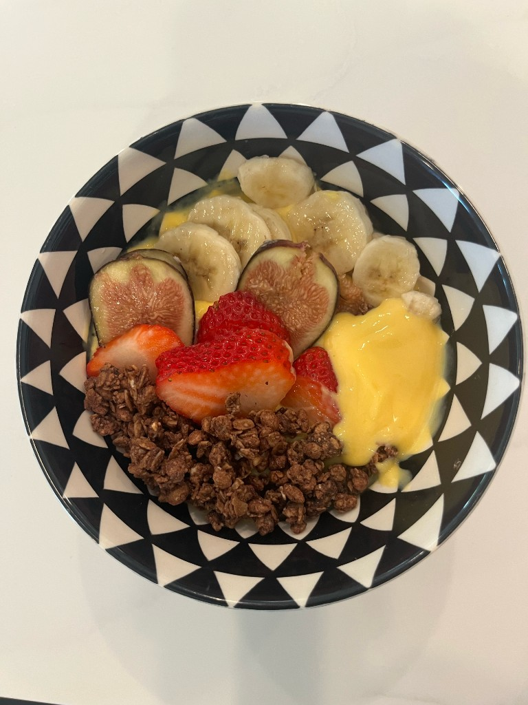
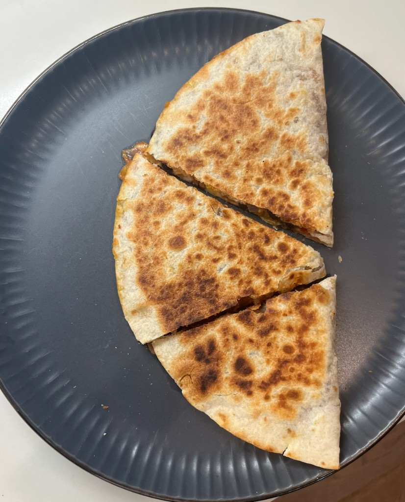

Recipes
Simple meals and bowls tested for steadier blood sugar.
-
Mango Protein Smoothie Bowl

Mango protein smoothie bowl with fruit and granola Ingredients
- 1 cup fresh mango purée
- 1/2 cup low-fat Greek yogurt
Directions
Blend the mango purée and Greek yogurt, then top with fruit of your choice and granola.
Nutrition Facts
- Calories: ~350 kcal
- Protein: ~17 g
- Carbohydrates: ~61 g
- Fiber: ~8 g
- Fat: ~6 g
-
Bean Veggie Quesadillas (Single Serving)

Bean veggie quesadilla with cheese Ingredients
- 1/2 small onion
- 1/2 small tomato
- Small piece of red and green bell pepper
- 1 tsp oil
- 1 tablespoon taco seasoning
- 1/4 can of black beans (or replace/add any veggies and beans of choice)
- Salt to taste
- 1 tortilla
- Cheese of choice
Directions
- Mix together all of the veggies and sauté them in a pan for a couple of minutes.
- Add the black beans, salt, and taco seasoning, and mix everything together.
- Add the mixture onto one side of the tortilla, and add cheese on top.
- Heat both sides of the tortilla until crispy.
Nutrition Facts
- Calories: ~505 kcal
- Protein: ~22 g
- Carbohydrates: ~46 g
- Fiber: ~9 g
- Fat: ~26 g
Note: I only consumed 2/3 of the quesadilla, so the blood sugar spike depicted in the video is based on the amount I ate.